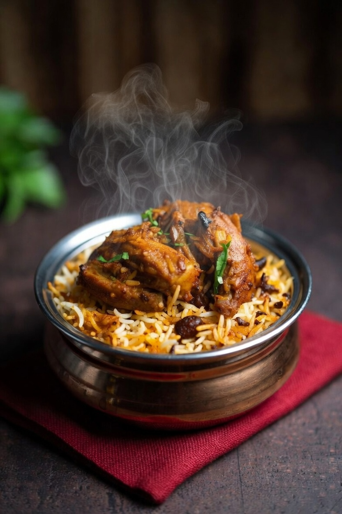

A Simple Biriyani Recipe

Description
Biryani is a rich and aromatic rice dish made by layering long-grain basmati rice with marinated meat (such as chicken, mutton, or beef) or vegetables, along with yogurt, fried onions, fresh herbs, and whole spices like cardamom, cloves, cinnamon, and bay leaves. The meat is typically marinated in a blend of spices, ginger-garlic paste, and yogurt to make it tender and flavorful before being cooked partially. The rice is also parboiled separately with whole spices so each grain stays fluffy and fragrant.
These layers are then assembled in a heavy pot and slow-cooked using the dum method, where steam is trapped inside to allow the flavors to blend deeply. The result is a dish with beautifully separated rice grains, tender meat or vegetables, and a complex balance of spicy, savory, and fragrant notes. Biryani is often served with raita, salad, or boiled eggs and is enjoyed as a festive and celebratory meal across South Asia.
Ingredients
- Chicken
- Yogurt (curd)
- Basmati Rice
- Ginger-Garlic Paste
- Onions
- Tomatoes
- Green Chilies
- Fresh Coriander Leaves
- Fresh Mint Leaves
- Lemon Juice
- Ghee or Oil
- Salt
- Red Chili Powder
- Turmeric Powder
- Coriander Powder
- Garam Masala
- Bay Leaves
- Cinnamon Sticks
- Green Cardamom
- Cloves
- Star Anise (optional)
- Caraway Seeds
- Saffron + Warm Milk
- Rose Water or Kewra Water
Steps
- Wash and soak basmati rice for 30 minutes, then drain.
- Marinate chicken with yogurt, ginger-garlic paste, chili powder, turmeric, coriander powder, garam masala, lemon juice, salt, and half the mint and coriander. Rest for 30–60 minutes.
- Fry sliced onions in oil or ghee until golden brown; remove half and keep aside.
- Add whole spices (bay leaf, cinnamon, cardamom, cloves, star anise, shahi jeera) to the same pot.
- Add green chilies and tomatoes; cook until soft.
- Add marinated chicken and cook until chicken is about 70% done.
- In another pot, boil water with salt and spices, add rice and cook till 70% done, then drain.
- Layer rice over chicken, top with fried onions, mint, coriander, saffron milk, and rose/kewra water.
- Cover tightly and cook on low heat (dum) for 15–20 minutes.
- Rest for 5 minutes, gently fluff, and serve hot.
Home